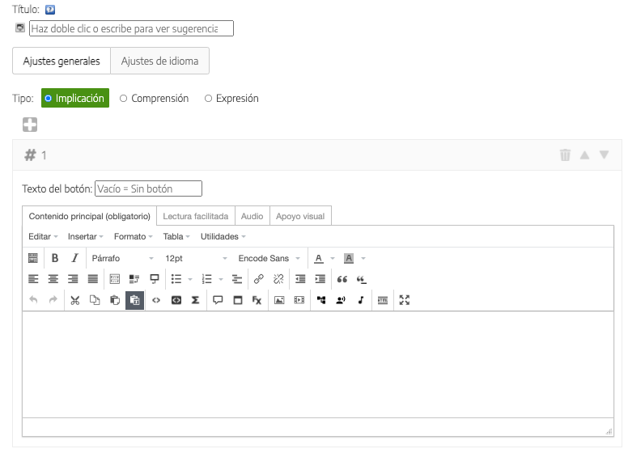
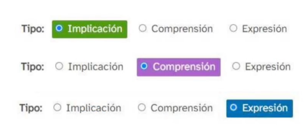
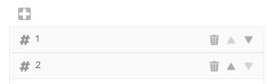
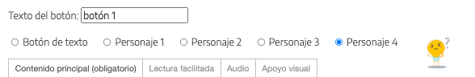
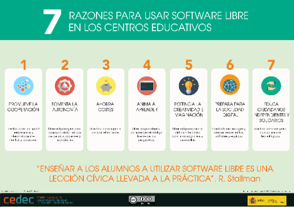

Guía de creación de REA con eXeLearning
Contenido DUA
El iDevice "Contenido DUA" nos permite introducir un contenido siguiendo los principios del Diseño Universal de Aprendizaje (DUA). Funciona en todos los estilos aunque el más apropiado es el estilo DUA, puesto que contiene iconos y colores para sacar el mayor partido a este iDevice.
Al seleccionar el iDevice "Contenido DUA" del listado de iDevices se nos mostrará lo siguiente en nuestro eXeLearning:

Como en el iDevice Texto, opcionalmente podemos añadir:
- Un título
- Un icono a elegir entre los disponibles para el estilo seleccionado (recordamos que el estilo DUA es el que más iconos ofrece para este contexto, y tiene iconos específicos con colores asociados al tipo de contenido DUA que queramos introducir)
- Un apartado de retroalimentación que se desplegará al hacer clic en el botón (el texto del botón también es modificable)
Para incluir el contenido en este iDevice, además, tenemos muchas más posibilidades:
- En primer lugar, elegiremos el tipo de contenido que vamos a insertar de acuerdo a la clasificación que realiza el DUA: Implicación, Comprensión o Expresión. En algunos estilos (como DUA) se diferenciarán unos contenidos de otros por el color asociado.

- A la hora de incorporar el contenido, podemos añadir tantos bloques como deseemos. Por defecto aparece solo uno, pero podemos añadir más haciendo clic en el icono .

- En cada bloque de contenido se nos ofrecen distintas posibilidades:
- Debemos decidir si queremos que el contenido que introduzcamos aparezca directamente (en cuyo caso dejaremos vacío el campo "Texto del botón") o si por los contrario queremos que el contenido aparezca al hacer clic en un botón. En este caso, tendremos que indicar el texto del botón y, si queremos, asociar el botón a uno de los personajes disponibles.

- En la caja de contenido se nos presentan 4 pestañas en las que podemos añadir el mismo contenido en formatos diferentes para facilitar la comprensión del mismo por parte de todos los usuarios:
- Contenido principal, donde incluiremos nuestro contenido (obligatorio).
- Lectura facilitada
- Audio
- Apoyo visual
- Debemos decidir si queremos que el contenido que introduzcamos aparezca directamente (en cuyo caso dejaremos vacío el campo "Texto del botón") o si por los contrario queremos que el contenido aparezca al hacer clic en un botón. En este caso, tendremos que indicar el texto del botón y, si queremos, asociar el botón a uno de los personajes disponibles.
En este apartado de la guía "Crea tu REA para el proyecto REA Andalucía" podemos ver un vídeo en el que se explican en profundidad todas las posibilidades de este iDevice.
Ejemplo 1 de Contenido DUA - apoyos al contenido principal
7 RAZONES PARA USAR SOFTWARE LIBRE EN LOS CENTROS EDUCATIVOS (basado en un texto de Richard Stallman)
- PROMUEVE LA COOPERACIÓN. Libertad para compartir herramientas y desarrollos entre centros y docentes.
- FOMENTA LA AUTONOMÍA. Libertad para gestionar los equipos informáticos de centros, docentes y estudiantes.
- AHORRA COSTES. Libertad para copiar y distribuir el software.
- ANIMA A APRENDER. Libertad para leer y comprender el código fuente de los programas.
- POTENCIA LA CREATIVIDAD E IMAGINACIÓN. Libertad para crear y distribuir de forma continua programas y desarrollos.
- PREPARA PARA LA SOCIEDAD DIGITAL. Libertad para escoger y diseñar herramientas, software y equipos.
- EDUCA CIUDADANOS INDEPENDIENTES Y SOLIDARIOS. Libertad para compartir conocimientos tecnológicos.
Apoyo visual

Ejemplo 2 Contenido DUA - varios bloques y botones
Crear una secuencia didáctica con eXeLearning
Te contamos cuáles son los pasos a seguir para crear una secuencia didáctica con eXeLearning:
1. Instalar eXeLearning
Se trata de una herramienta gratuita, de código abierto, que está disponible en www.exelearning.net para los sistemas operativos:
- GNU/Linux
- Debian/Ubuntu 20.04+ (Snap)
- Debian/Ubuntu
- Fedora/Redhat
- Versión portable (Linux)
- eXe Labs: Launchpad PPA (Linux)
- Código fuente para la generación de paquetes (disponible en GitHub)
- Microsoft Windows
- Versión instalable
- Versión autoejecutable (ready2run)
- Versión portable (Windows)
- Apple
- macOS
2. Crear la estructura
eXe permite crear un menú navegable para organizar los contenidos en páginas. Este menú tiene una estructura jeráquica que podemos organizar según nuestras necesidades, con los nodos y subnodos que precisemos. El menú estará disponible al exportar como sitio web o al publicar tu contenido en un LMS como Moodle.
3. Añadir el contenido
Podemos insertar todo tipo de materiales, utilizando los bloques de contenidos o “iDevices”. En el editor de los iDevices “Texto” y “Tareas” podemos incluir y formatear textos, añadir imágenes, subir vídeos o audios, y embeber contenidos creados con otras herramientas: vídeos de YouTube o materiales publicados en H5p, Genially, SlideShare, Vimeo, Issuu… Finalmente, podemos elegir el estilo de entre los disponibles, o crear uno personalizado. Respecto a la organización de contenidos, apostamos por:
- Empezar con una actividad de motivación, reflexión o de movilización de conocimientos previos, como preparación para la realización de tareas posterior.
- Presentar las tareas a realizar con la explicación correspondiente, facilitando, en su caso, enlaces a documentos o a webs para búsqueda de información o consulta, herramientas TIC necesarias para la realización de las tareas (con enlace a un manual o tutorial) y, fundamental, el instrumento de evaluación de dicha tarea, que servirá además como guía para el alumnado.
- Añadir actividades de reflexión a lo largo del proceso de aprendizaje, para trabajar la metacoginición, asimilar mejor los aprendizajes y potenciar la competencia de aprender a aprender.
4. Añadir interactividad
Podemos enriquecer nuestra secuencia con actividades interactivas que sirvan de autoevaluación al alumnado. Algunas de estas actividades dejan rastro en Moodle, por lo que se pueden utilizar para calificar. También se pueden incorporar otros iDevices como el de Rúbrica.
5. Exportar y publicar
Una vez terminada la secuencia, podemos exportarla en distintos formatos, en función de lo que queramos hacer con ese material:
- Guardar el recurso en local, en un pendrive o en un almacenamiento externo, y enviárselo al alumnado para su consulta.
- Publicarlo en Procomún y ofrecer al alumnado el enlace directo.
- Subirlo a una plataforma LMS tipo Moodle.
- Publicar en otros espacios web ofrecidos por instituciones educativas o de otros tipo (BSCW social, Grassp…)
¿Tienes dudas?
Para cualquier duda o sugerencia con respecto a la herramienta, podemos consultar el manual de eXe, los foros en eXeLearning.net y el grupo de Telegram.
El contenido de este bloque está extraído del artículo Crear una secuencia didáctica con eXeLearning publicado en mayo del 2020 en la web del CEDEC.
Practica eXe: contenido DUA
Realiza los siguientes procedimientos:
- Abre el archivo miarchivo.elp que has creado en la actividad anterior (puedes hacer doble clic sobre él)
- Crea un iDevice "Contenido DUA" en el nodo "Preguntas". Modifica el título.
- Selecciona un tipo de contenido.
- Añade un contenido sin botón. Rellena la pestaña Contenido principal y Audio.
- Añade un segundo bloque de contenido con un botón de texto y elige un personaje. Rellena la pestaña Contenido principal y Apoyo visual.
- Una vez terminado haz clic en el botón Guardar para ver el resultado.
- Guarda los cambios. (Archivo > Guardar)
Obra publicada con Licencia Creative Commons Reconocimiento Compartir igual 4.0